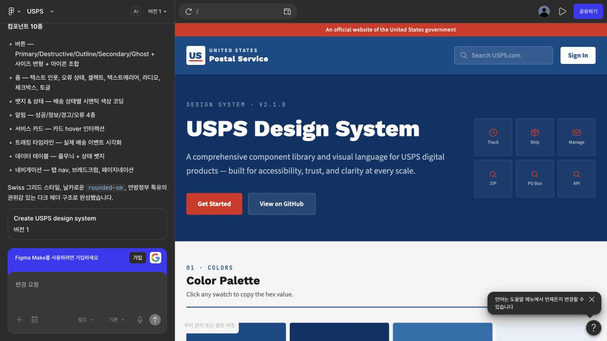
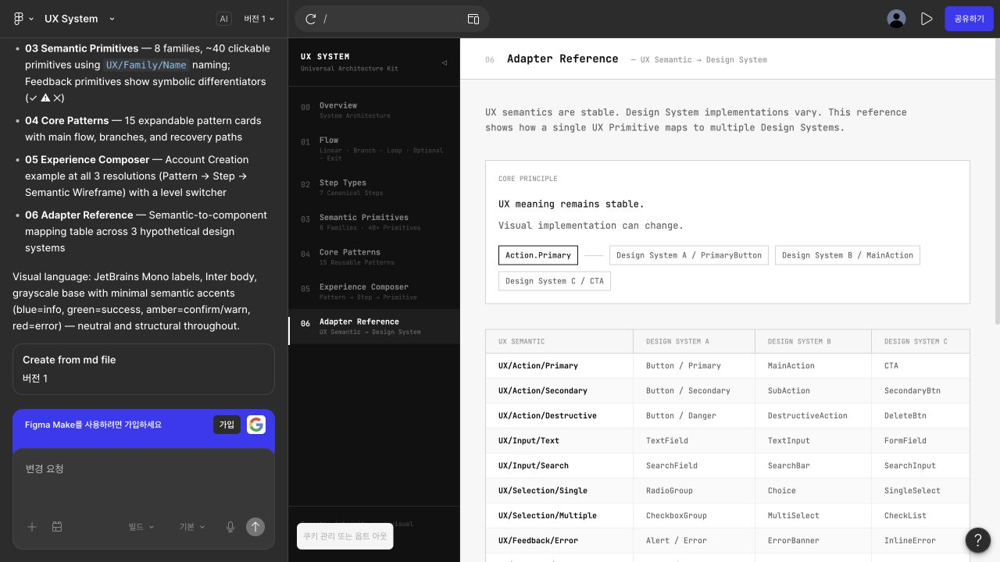
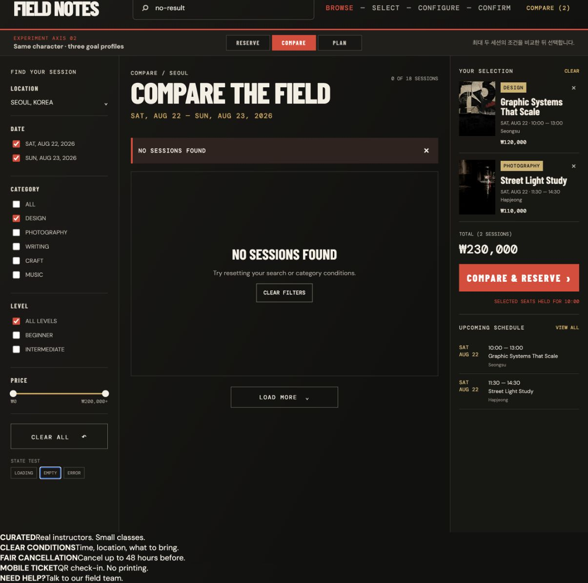
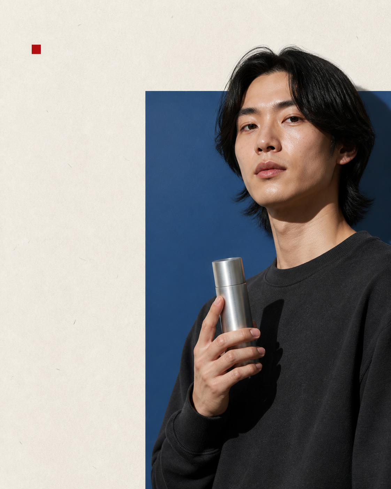
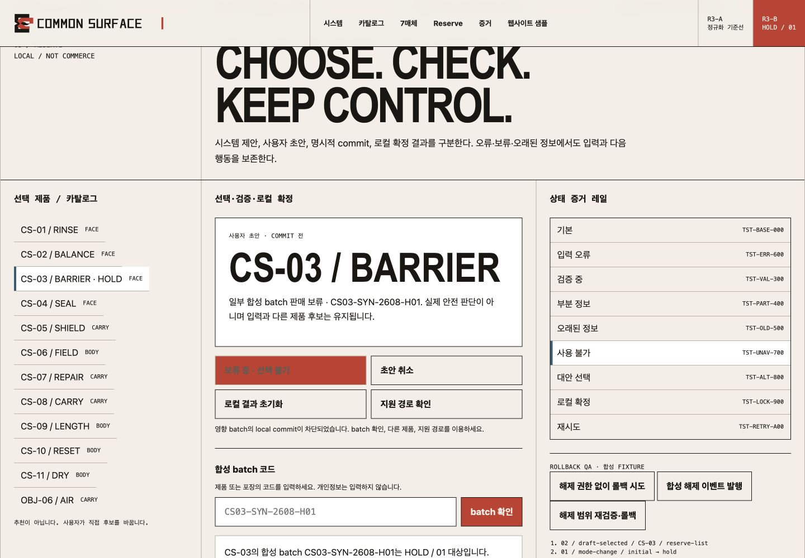

08/10 READ
새로 만들기 전에
이미 만든 시스템을 분석했다.
새로운 레퍼런스를 찾기보다, 내가 이미 만들고 사용하던 디자인 시스템을 다시 분석했다. 어떤 구조가 반복되고 어디에서 일관성이 무너지는지, AI에게 무엇을 설명해야 하는지 확인하며 다음 시스템의 기준을 마련했다.
발견: AI가 이해해야 하는 것은 스타일이 아니라 스타일이 쓰이는 이유와 구조였다.

하나의 가설을 들고 떠난 C5의 모험기
AI의 도움을 받아 UI와 UX가 분리된 범용 디자인 시스템을 만들기로 했다. UX는 경험의 흐름과 판단을, UI는 그 경험이 보이는 방식을 맡는다. 이 분리가 다른 맥락과 결과물로 확장될 수 있는지 확인하는 것이 출발점이었다.
새로운 레퍼런스를 찾기보다, 내가 이미 만들고 사용하던 디자인 시스템을 다시 분석했다. 어떤 구조가 반복되고 어디에서 일관성이 무너지는지, AI에게 무엇을 설명해야 하는지 확인하며 다음 시스템의 기준을 마련했다.
개선된 기준으로 새 디자인팩을 만들고 UX/UI 시스템과 시각 표현을 나눴다. 하지만 시각 작업은 여전히 느렸고, 새 시스템을 만든다고 품질이 자동으로 개선되지는 않았다.

Figma MCP용 플러그인을 개발하고 A/B 테스트를 진행했다. 효율을 높이려는 도구가 오히려 새로운 설정·토큰 관리·시각 해석의 부담을 만들었다. 병목을 줄이려다 더 큰 병목을 초래한 1차 실패였다.
게임 UX 흐름을 먼저 문서로 정리한 뒤 Figma Make로 데모 디자인 시스템을 만들었다. 문서와 레퍼런스가 화면으로 옮겨지며 질문은 “만들 수 있는가?”에서 “의도한 구조가 남아 있는가?”로 바뀌었다.

같은 화면에 다른 색만 입히는 방식은 부족했다. 선택·검증·커밋·결과·복구의 흐름까지 바뀌어야 다른 경험이라고 판단했다.

흩어진 화면과 리서치를 Design Pack과 UX Preset 문서로 다시 정리했다. 무엇이 UX의 기준이고 무엇이 시각 표현의 선택인지 구분하며 다음 실험에서 반복할 판단 기준을 만들었다.

Design Pack과 UX Preset을 제품 흐름에 적용했다. 상태·선택·오류·복구가 같은 기준으로 유지되는지 확인하며 한 화면이 아니라 전체 흐름을 검증하기 시작했다.

R3는 7개 매체에 변경을 전파하며 운영 비용과 관리 결함을 드러냈다. R4는 Design Pack·로고·제품·토큰을 고정하고 고객 상황 하나만 바꿔 변화의 의미를 확인했다.
확장성은 보였지만 Binding·권한·rollback·증거 관리가 복잡해졌다.
한 변수의 변화는 읽을 수 있었지만 실제 사용자 가치의 증명은 아니다.

큰 이미지는 전환점을, 작은 이미지는 실험의 규모를 보여 준다.











얻은 것
UX와 시각 표현의 분리
Design Pack과 UX Preset의 구분
판단 기준을 문서로 재사용하는 방법
아직 모르는 것
실제 사용자도 같은 차이를 느끼는가
다른 사람이 독립적으로 사용할 수 있는가